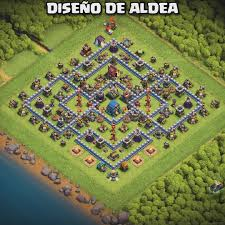
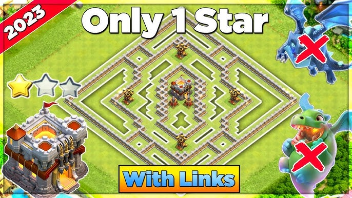

El peor nivel de ayuntamiento suele ser el 12 o el 13 según la comunidad de Clash of Clans. El nivel 12 destaca por el tedio y el salto abrupto en tiempos de mejora de héroes y edificios. El nivel 13 es odiado por los dobles niveles de defensas y por tener que mejorar a los héroes decenas de niveles.El ayuntamiento 12Muchos jugadores lo consideran la etapa más tediosa del juego debido a un desbalance en la progresión. Venir de los ayuntamientos 9, 10 y 11 (considerados las "edades de oro") y llegar al 12 se siente como pasar del colegio a la universidad. Requiere una cantidad de tiempo enorme para mejorar estructuras y subir 15 niveles al Rey Bárbaro y a la Reina Arquera, y 20 niveles al Gran Centinela.
En Clash of Clans, el "mejor" nivel de ayuntamiento depende de lo que busques, pero el Ayuntamiento 11 es ampliamente considerado uno de los más divertidos y equilibrados.se destacan los mejores niveles según diferentes estilos de juego:Para principiantes y avance rápido: Los ayuntamientos 9 y 10 son ideales para dominar las bases del ataque estratégico, ya que desbloquean defensas icónicas como las Ballestas y las Torres Infierno.El más equilibrado y divertido (TH11): Es el favorito de la comunidad. Desbloqueas al Gran Centinela (uno de los héroes más importantes), el Águila de Artillería y las supertropas. Ofrece el mejor balance entre estrategias complejas y un diseño de aldea visualmente atractivo sin llegar a ser tedioso de subir.Para los más avanzados (TH15 al TH18): El Ayuntamiento 18 es el nivel máximo actual y donde se encuentra la mayor cantidad de jugadores activos de alto nivel. Son ideales si prefieres desafíos competitivos y mecánicas complejas como el Monolito o los hechizos de furia.

Los puntos destacados en Clash of Clans se centran en el progreso estratégico y la satisfacción de maximizar tu aldea. Los hitos clave incluyen dominar la progresión de tu Ayuntamiento, desbloquear héroes poderosos, y optimizar las mejoras de edificios y tropas.
Desbloqueo de Héroes: Cada nivel trae ventajas únicas, desde la Reina Arquera en Ayuntamiento 9, hasta el Gran Centinela y las mascotas de combate que transforman tus ataques en los niveles superiores.El Sexto Constructor: Una de las metas más importantes y gratificantes es conseguir al constructor maestro en la Base del Constructor, lo que acelera todo tu progreso.Optimización de Constructores: La regla de oro es priorizar siempre las mejoras clave: el Laboratorio, el Castillo del Clan, los Campamentos del Ejército y los Cuarteles.
